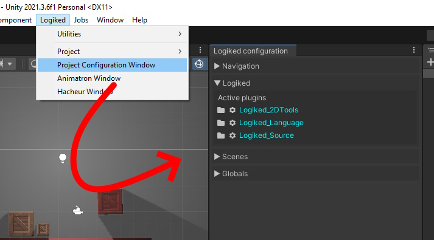
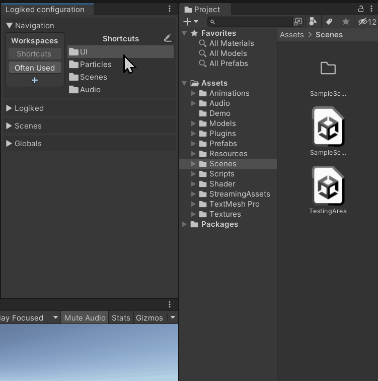
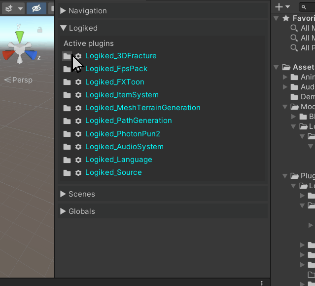
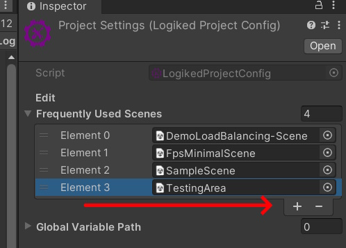
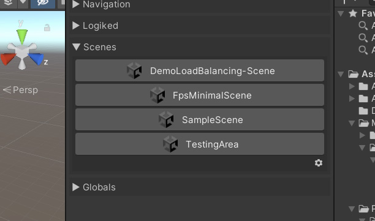
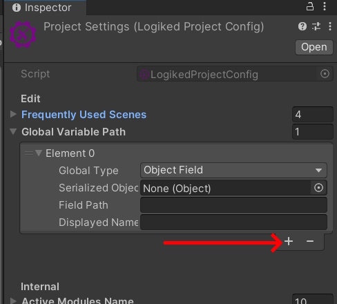
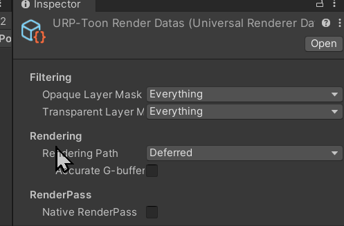
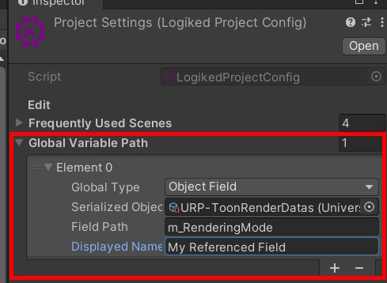
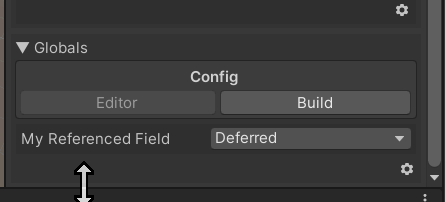

Fenêtre de configuration
La fenêtre de configuration est disponible via le menu Logiked/ConfigurationWindow. Un fois ouverte, plusieurs sections sont disponibles.

Navigation
La section Navigation permet de créer des liens clickables des Assets du projet, groupés en 'workspaces'. Pour cela rien de plus simple, il suffit créer un workspace depuis la fenètre et d'y Drag & Drop vos assets favoris.

Cas d'usage
- Créer des raccourcis vers des assets que vous utilisez souvent dans un gros projet.
- Lorsque que votre projet est organisé par ressources, cela permet de regrouper (temporairement ou non) des fichier ayant des attributs communs. Par exemple, les Textures, Prefabs, Sons d'une même entitée pendant son dévéloppement.
Section Logiked
Cette section permet de visualiser les packages logiked installés, et d'acceder à leur configuration. Sur le gif ci dessous, je modifie les paramètres du package Logiked Language.

Scenes
Cette section permet de naviguer entre les scènes fréquement utilisés afin de simplifier la navigation dans de gros projets.
Cliquez sur l'engrenage "⚙️" en bas à droite du panneau. Ensuite, ajoutez vos scènes fréquement utilisés.

Vous pouvez désormais y acceder en 1 clic.

Globals
Cette section permet de modifier des champs d'Assets en fonction de la configuration actuelle (Editor ou Build).
Case d'usage
- Modifier des préfabs avant le build (désactiver des cheats, activer des effets visuels..)
- Rendre inaccessible certains Assets
- Modifiers des liens vers des prefabs (Utiliser le prefab B au lieu du prefab A pour le joueur)
- Ajouter une
RenderFeatureà Urp seulement au moment du build. (spécifique)
Note : Actuellement l'ajout de variables globales se fait manuellement. Dans des prochaines versions cela pourra être fait automatiquement de manière plus intuitive
Comment faire
Cliquez sur l'engrenage "⚙️" en bas à droite du panneau. Ensuite, ajoutez une entrée à "Global Variable Path".

Pour cet exemple, je vais tenter de modifie la variable "Rendering Path" de mon fichier de configuration URP. Notez que vous pouvez réaliser cette amnipulation avec la quasi intégralité de vos assets et de leur champs. Pour cela, il faut aller sur le fichier en question et copier le chemin du champ concerné.

Ensuite, il faut retourner dans le Project Settings et appliquer le chemin, tout en spécifiant l'objet qui contient le champ. Un nom d'affichage peut-être ajouté.

Le résultat est disponible en temps réel dans la fenêtre de configuration Logiked/ConfigurationWindow/Globals.
